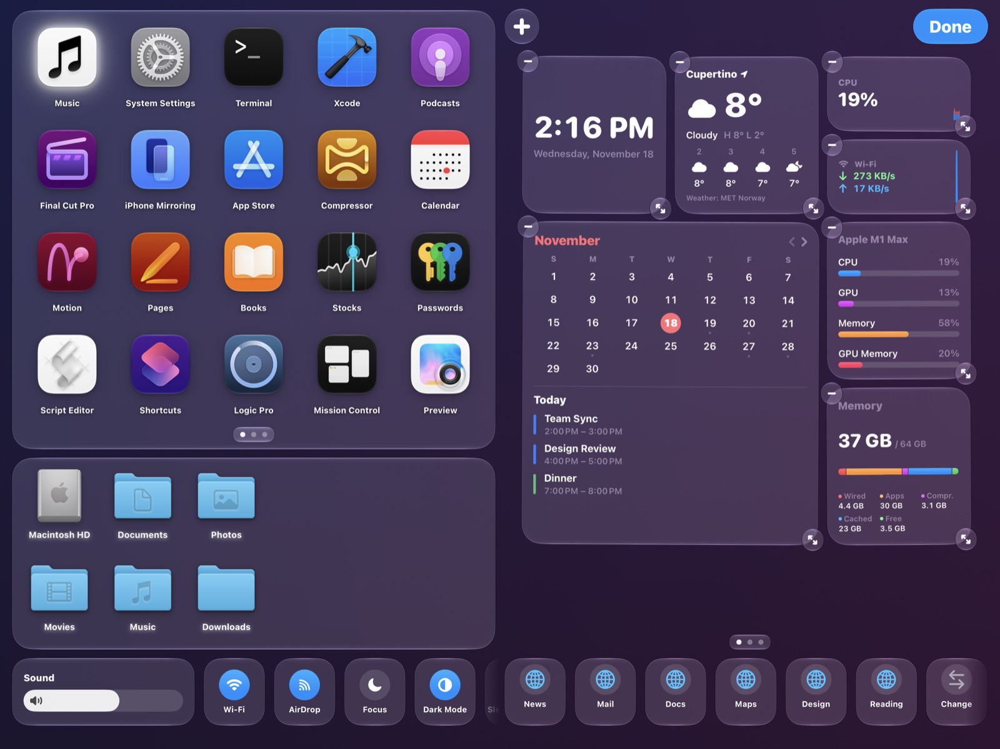
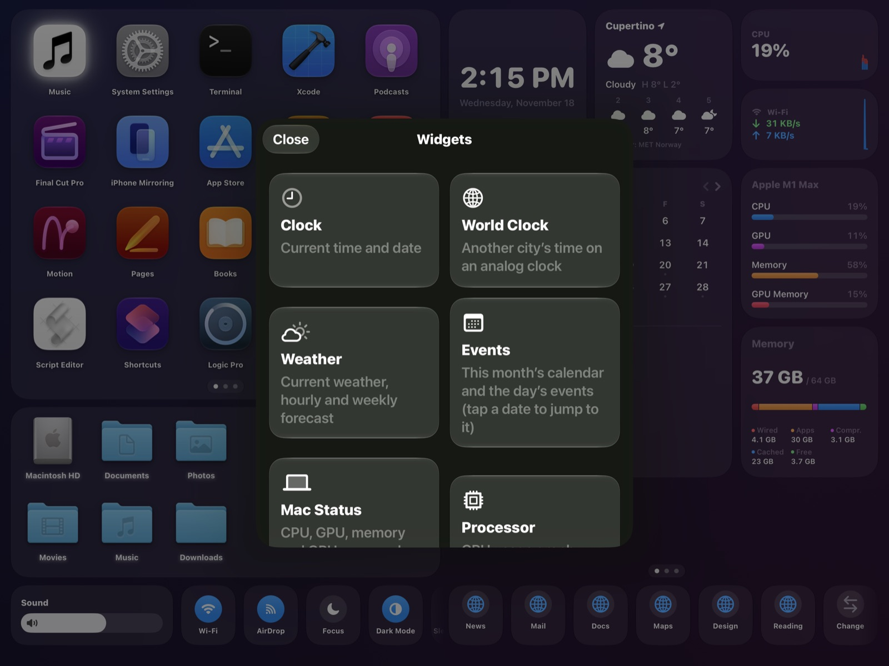
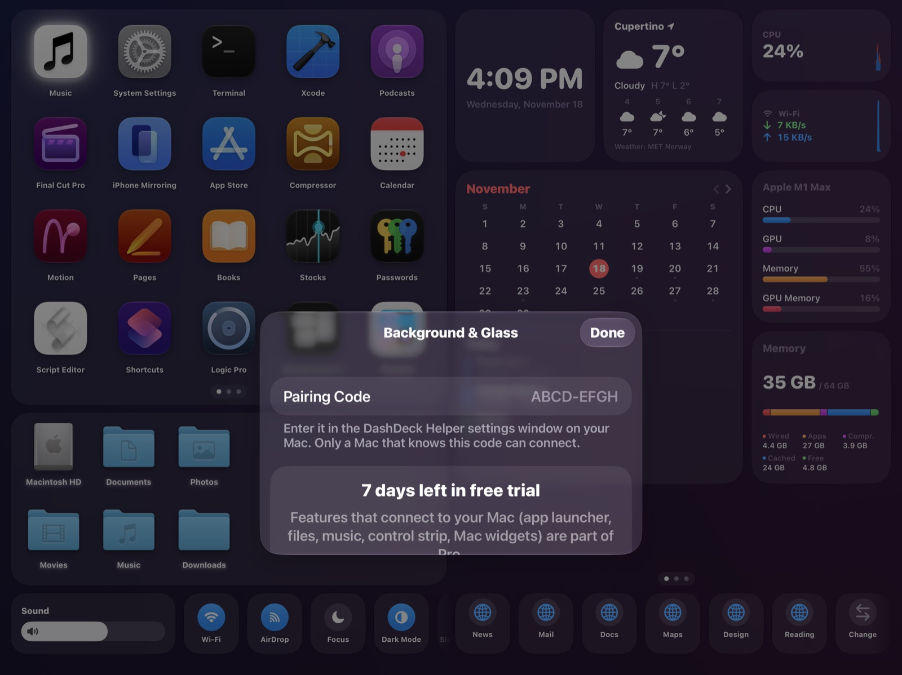
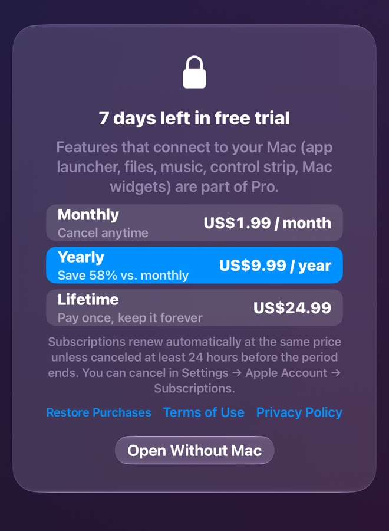

App launcher — your Mac's apps. Tap to open one on the Mac.
Drives & folders — Macintosh HD, external and network drives, and your main folders.
Control strip — sound, Wi-Fi, AirDrop, Focus, Dark Mode and more.
Widget board — clock, weather, calendar and Mac status. Swipe left and right for more pages.
Page dots — how many widget pages you have. The last page is always the music page.
Bookmarks strip — your browser's bookmarks bar. Tap to open a site on the Mac.
2. Connecting
The first time, pair your Mac with the 8-character code — see the setup guide.
After that, DashDeck connects by itself within a few seconds whenever the iPad and Mac are on the same Wi-Fi network
or connected with a USB cable, and DashDeck Helper is running.
If the connection drops, the screen dims and "Waiting for your Mac" appears. It goes away by itself when the Mac is back
(a drop of under 2 seconds isn't shown at all).
No Mac nearby? Tap Open Without Mac (it appears after about 8 seconds). The iPad-only widgets keep working.
To see the pairing code again later: touch and hold an app icon → Edit Home Screen → Background.
The connection is encrypted, and only a Mac that knows your code can connect.
3. App launcher
Tap an icon to open that app on your Mac.
Glowing icons are apps that are running on the Mac right now.
Order: running apps first, then recently used apps, then the apps you use most (counted over the last 30 days).
Swipe left or right for more pages (20 apps per page).
Touch and hold an icon for Remove from Launcher or Edit Home Screen. While editing:
− hides an app, + brings hidden apps back.
Background opens Background & Glass.
The control strip can be edited at the same time (see Control strip).
Done finishes.

4. Drives, folders & files
Order: Macintosh HD → external drives → network drives → folders on your Desktop → Documents, Photos, Movies, Music, Downloads.
Tap a folder to go inside. Home and Back buttons appear on the left.
Tap a file to preview it on the first widget page:
Photos and documents: view large, pinch to zoom.
Music: plays right on the iPad.
Video: MP4 and MOV play on the iPad, streamed from the Mac (scrub and full screen work). Other formats such as MKV
or AVI don't play on the iPad — double-tap to open them on the Mac.
Double-tap to open on the Mac (folders in Finder, files in their default app).
In a preview, Show Enclosing Folder opens the folder in Finder with the file selected.
Folder lists and thumbnails are kept on the iPad for 30 days so they appear instantly next time.
5. Widgets
Swipe the widget board left and right to change pages. A file preview opens on the first page; the last page is the music page.
Add, remove, resize, reorder
Touch and hold a widget → Edit Widget.
+ (top left): pick a widget, pick a size, Add Widget.
− removes a widget. The arrow in the corner changes its size. Drag to reorder.
Done.

Size
Space
Half
1 column × half a row
Small
1 × 1
Medium
2 × 1
Large
2 × 2
Not every widget comes in every size.
Widgets that work on the iPad alone
Widget
What it shows
Clock / World Clock
The time here, or another city's time on an analog clock.
Weather
Current weather where you are, hourly and 5-day forecast (data: MET Norway). Needs Location.
Events
This month's calendar and the day's events. Tap a date to jump to it. Your Mac's events are included too.
Photos
A photo you pick. In edit mode, Change Photo.
Timer
Tap its name to switch between timer and stopwatch. You get a notification when it ends, even in another app.
D-day
Counts the days to a date. Tap to set the name and date.
Notes
Type right in the widget.
Reminders
Tap the circle to complete a reminder (it syncs to your Mac through iCloud).
Health Summary
Activity rings (or step and calorie goals), steps, sleep and resting heart rate, compared with your 7-day average. Large size adds recent workouts.
Health Trends
7- and 30-day charts for steps, sleep, heart rate, weight and more. Touch and hold to pick what to show.
Health data is read on the iPad only and never leaves it.
Widgets that show your Mac
Widget
What it shows
Mac Status / Processor / Memory / Network
Usage and live graphs. For Network, touch and hold to choose the connection.
Storage / Battery
Free disk space; battery of a MacBook and Bluetooth devices.
Screen Time Today
How long you used each app today.
Processes
What's using the most CPU. In Medium and Large, quit one with ✕.
Internet
Response time, your public IP address and recent outages.
Now Playing
Control Music, Spotify or YouTube in Chrome.
Recent Files / Downloads
Tap to preview, double-tap to open on the Mac.
Clipboard
What you copied on the Mac. iPad → Mac sends the other way.
Time Machine
When the last backup finished.
NAS
Storage and disk temperature of a Synology NAS (set it up in the Helper: Connect a NAS…).
Rendering
Export progress in Final Cut Pro, Compressor, Premiere Pro and DaVinci Resolve. For Final Cut Pro, keep its Background Tasks window (⌘9) open. Needs Accessibility.
6. Music page
The last widget page controls the Music app on your Mac.
Top: album art, a progress bar you can drag, shuffle, previous, play, next, repeat and volume.
Below: your playlists and recently added albums. Tap one to see its songs; tap a song to play it on the Mac,
or use Play / Shuffle.
Playlists with more than 500 songs show the first 500.
Needs the Music Control permission in the Helper's setup.
7. Control strip
Tile
Tap
Touch and hold
Sound
Drag to change the volume, tap the speaker to mute
Choose the output device
Wi-Fi
Turn on or off (asks before turning off)
Join a nearby network (needs Location)
AirDrop
Turn on (Contacts Only) or off
Off / Contacts Only / Everyone
Focus
Do Not Disturb on or off
Choose another Focus
Dark Mode
Switch between light and dark
—
Sleep Display
Turn the Mac's display off
—
Mission Control / Screenshot
Open them on the Mac
—
The first time you use Focus, macOS may ask to add a shortcut — click Add once. macOS lets apps change Focus only through Shortcuts.
To add or remove tiles: touch and hold an app icon → Edit Home Screen. Tiles show −, and
a + tile adds more.
If your sound output is an audio interface, its volume is set with the device's own knob.
8. Bookmarks strip
It starts empty. Tap Import and choose Safari or Chrome to bring in that browser's bookmarks bar.
Tap a bookmark to open it in that browser on the Mac. Folders open inside the strip.
To switch browsers or clear the strip, tap Change at the end.
Reading bookmarks needs Full Disk Access. If it's missing, your Mac opens the right settings and a short guide by itself.
Safari doesn't share site icons, so Safari bookmarks show a plain globe.
9. Background & Glass
Touch and hold an app icon → Edit Home Screen → Background.
Mac Wallpaper follows your Mac's wallpaper, or Choose from Photos. A slider blurs it.
Glass: Clear lets more of the background through; the slider makes the glass darker.
Your pairing code and your DashDeck Pro status are shown here too.

The code in the picture is an example.
10. DashDeck Helper on your Mac
The Helper runs in the menu bar and starts when you log in. Its menu shows the connection status and has:
Settings… — the iPad connection and pairing code, NAS, and Other: Run Setup Again…,
Import Bookmarks, Bookmark Permission…, Quit Helper.
Connect a NAS… — address, user name and password of a Synology NAS. The password is stored only in your Mac's keychain.
Get Version … — appears when a newer Helper is on this site. The Helper checks once a day.
Permission
Used for
Calendar
Your Mac's events in the Events widget
Automation (Music, Spotify, Chrome)
Now Playing and the music page
Accessibility
The Rendering widget
Location
Wi-Fi network names in the control strip
Full Disk Access
The bookmarks strip and the Focus list
Local Network
Finding and connecting to your iPad
Can't see the menu bar icon? Open DashDeck Helper again from Applications and the settings window appears.
To show the icon: System Settings → Menu Bar → Allow in the Menu Bar → DashDeck Helper.
11. Free trial & DashDeck Pro
Everything is free for 7 days from the first launch.
After that, the iPad-only widgets stay free. The features that use your Mac — app launcher, files, music, control strip,
Mac widgets and bookmarks — need DashDeck Pro.
Pro comes three ways: monthly, yearly, or a one-time lifetime purchase. Prices are shown in your currency in the app.
Restore Purchases brings back Pro on a new iPad.
Cancel a subscription in Settings → your name → Subscriptions, or with Manage Subscription in Background & Glass.

12. Troubleshooting
Problem
What to do
Stuck on "Waiting for your Mac"
Check that DashDeck Helper is running and both devices are on the same Wi-Fi. On the iPad: Settings → DashDeck → Local Network on. On the Mac: System Settings → Privacy & Security → Local Network → DashDeck Helper on.
The Helper says the pairing code doesn't match
Enter the code shown on the iPad again in the Helper's settings.
"… is out of date"
Update the app it names: DashDeck from the App Store, DashDeck Helper from this site.
A Mac widget says it couldn't get info
Make sure DashDeck Helper is running and up to date.
Now Playing is empty
Mac: System Settings → Privacy & Security → Automation → allow Music, Spotify or Chrome for DashDeck Helper.
YouTube in Chrome doesn't play or pause
In Chrome: View → Developer → Allow JavaScript from Apple Events.
Rendering widget is empty
Allow Accessibility for DashDeck Helper. In Final Cut Pro, open the Background Tasks window (⌘9).
Bookmarks strip is empty
Tap Import and choose a browser. Allow Full Disk Access for DashDeck Helper.
NAS widget shows an error
Helper menu → NAS settings: check the address, user name and password.
No weather
iPad: Settings → DashDeck → Location → While Using the App.
The screen doesn't respond
Swipe up to close DashDeck and open it again.
13. Good to know
The iPad screen stays on while DashDeck is open.
Text and images you copy on the Mac show up in the Clipboard widget. Items copied from password managers are skipped.
To stop the Helper starting at login: System Settings → General → Login Items → DashDeck Helper.
No account, no cloud, no tracking. See the Privacy Policy.
 123456
123456